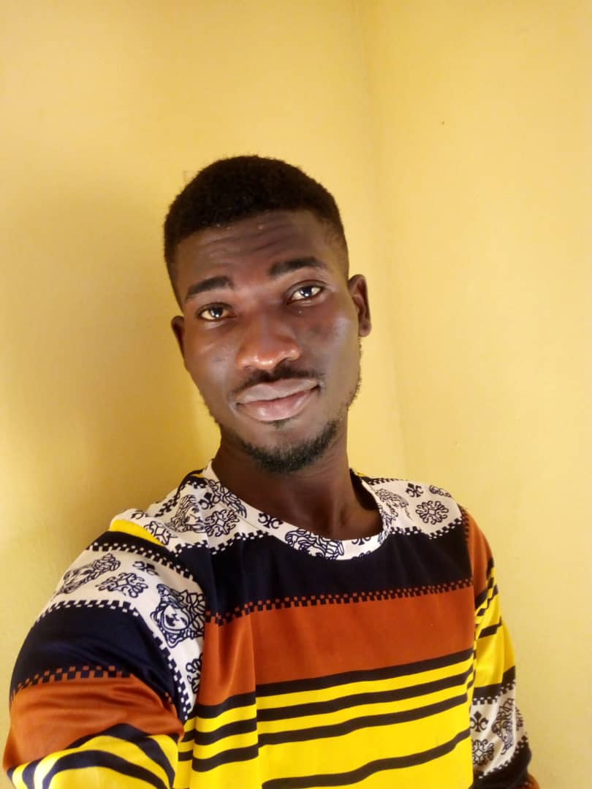
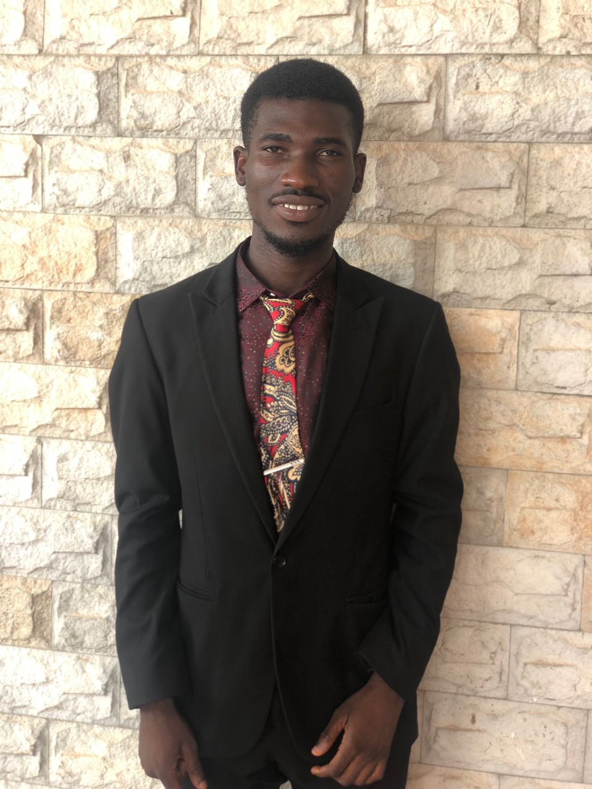
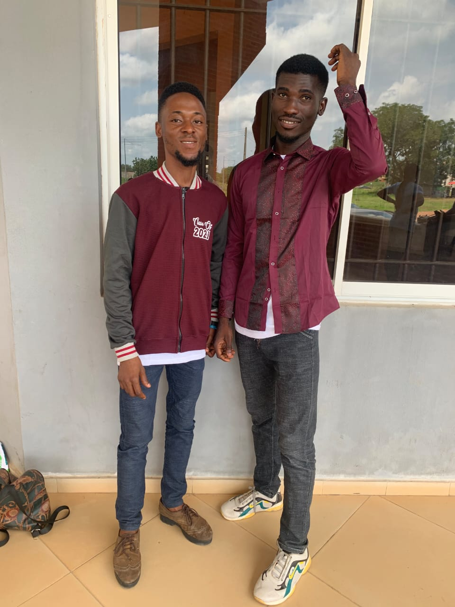
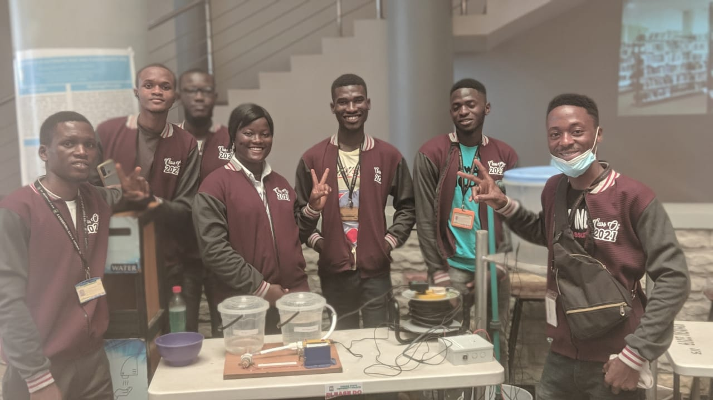

YUSUF OLADIMEJI YUSUF
25, Adegboyega Street, Amukoko, Lagos State
yusufoladimeji01@gmail.com
08100439994, 08050671084
Personal Statement:
I’m a diligent, reliable and trustworthy individual. A hard working and sufficiently
capable of working under pressure at any point in time, always seeking to expand
corporate expectation by meeting and exceeding target requirement, always ready to
learn new skills and method of working, capable of dealing with challenges with
minimum or no support. Self-multivated and result oriented.
Education:
[2016 – 2021] Kwara State University, Malete, Kwara state.
(B.ENG) Electrical/Electronics Engineering
Second Class Honours (Upper Division)
[2016 – 2021] Government Secondary School, Ilorin.
Senior School Certificate Education (SSCE)
Employment and Work Experience:
[2020-2021] [Research Engineer] [INTADEM Integrated Technology]
Main duties performed:
- Lead a research team of 6 to design and develop a fish-feeding automatesystem for a fish farm.
- I lead a research team on sinewave inverter algorithm which was implementedusing PIC16F886 PIC Microcontroller.
- Designed and analyse circuits for clients projects
- Simulate hardware and software system
- Designed and develop a one time password (OTP) based security system
- Designed a system that helps students to locate a free venue for lectures ininstitutions.
[2020] [[Field Assistant] [NET PC Nigeria Limited]
Main duties performed:
- I worked with the installation team on the installation of solar PANEL, inverter,and CCTV and earn the company more trust from clients.
[2020] [[Field Assistant] [NET PC Nigeria Limited]
Main duties performed:
- I worked with the installation team on the installation of solar PANEL, inverter, and CCTV and earn the company more trust from clients.
[2016-2017] [[Field Assistant] [De-sure Rejfresh Technology]
Main duties performed:
- Led a team on the installation of Inverters and Solar panels which brought about work efficiency in terms of work delivery.
- Built modified sine wave inverter using SG3525 analog IC as a replacement board for damaged inverter boards.
- Built ATS (Automatic Transfer Switch) between three sources of power supply which makes inverters to be more user-friendly and stress-free.
Skills:
Technical Skills:
- MS office
- Computer programming (python)
- Computer programming (C Language)
- Interface with Arduino
- Interface with PIC microcontrollers
- PCB Design and Printing
Interpersonal skills:
- Active listener
- Emotional intelligence
- Good Communication Skills
- Relationship Building
Professional Membership:
- Graduate Member of Nigeria Society of Engineers G69570
- Google Developer Student Club
Hobbies and Interests:
- Reading: I love to read educative books to improve my critical and problemsolving skills, particularly those that are related to engineering, finance and
world wealth.
- Dancing: I dance a lot to relieve of my mental stress and exercise my body.
Awards:
- 1st runner-up and outstanding leadership in innovation and entrepreneurship
competition by the centre for entrepreneurship, kwara state university (2018).
Pictures Gallery:



